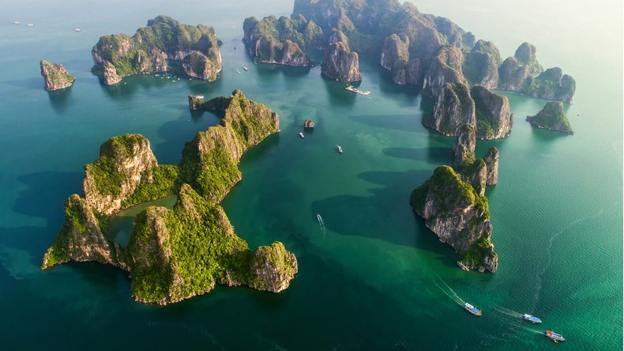
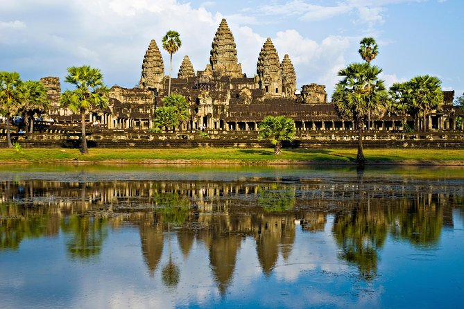
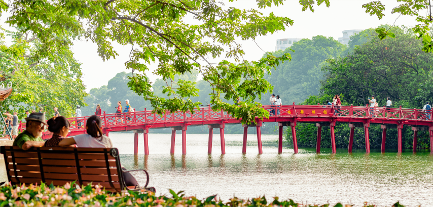
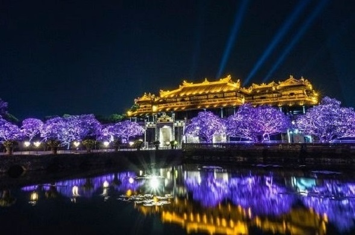

Planetary Systems: The Young Solar System
June 5-11, 2022, ICISE, Quy Nhon, Vietnam

June 5-11, 2022, ICISE, Quy Nhon, Vietnam
Program
June 11 – 19, 2022
Price : 950 USD in shared room,*1170 USD in single room
(This price includes: Accommodation full board, air conditioned vehicle, boat trip, English speaking guide and entrance fees – *minimum 3 persons – surcharge of 100USD if less than 3 persons)
 |
 |
 |
| Ha Long Bay | Hoi An | Da Nang City |
This tour will begin in Qui Nhon and end in Hanoi. We will travel north, first by road from Qui Nhon to Hoi An, a well preserved coastal city of considerable historical interest; UNESCO has designated it as a World Heritage Site. After spending the night at Hoi An, we will continue north by bus to Hue; if there is sufficient time, we will make a brief visit to Danang and other interesting sites. Hue was the imperial capital under the Nguyen Dynasty, which dominated Southern Vietnam from the 17th to the 19th century, and it is also a World Heritage site. From Hue, we will continue to the beautiful and unique Halong Bay; we will first fly to Hanoi, and from there go directly to Halong by road. We will visit the bay on a cruiseboat, on which we will spend the night; in this way, we will experience the unforgettable sight of sunset and sunrise over the limestone islands scattered over the whole bay. The next stop will be Ninh Binh, known as the “celestial Halong”. We will then continue to the city of Hanoi, the current capital of Vietnam, and spend some time exploring its interesting monuments and also participating in its life. The tour will end in Hanoi.
Day 1: June 11
12:00 am : Meeting at the lobby of the hotel.
We leave for Hoi An – the UNESCO world heritage site – about 350 km away. Arrival at the Hotel at around 7pm. Check in, Dinner at the hotel.
Day 2: June 12
Park View hotel****
After breakfast, you will leave on the coach, and with your tour guide you will explore Hoi An’s many unique attractions related to the town’s legacy as a commercial cross-roads in South East Asia: these attractions include a Japanese bridge, Chinese temples, the Old House, the Hoi An museum, the Hoi An market etc.
Return to the hotel at about 1:00. Check out. Lunch at a local restaurant in Danang. After lunch we will visit the Cham museum, which houses many relics of the ancient Cham civilization. The distance from Danang to Hue is about 110 km, which we will cover in about 3 hours. We will pass through one of the longest tunnels in Vietnam, which connects the provinces of Danang and Thua Thien Hue. We will stop at Lang Co beach, one of the best beaches in Vietnam: we will be able to enjoy a cup of coffee (or indeed anything else!) in full view of the Pacific Ocean.At about 6:00 PM we will check in at the Park View Hotel in Hue. At 7:00 pm a coach will take us for dinner in Hue.
Day 3: June 13
After breakfast, we will take a private boat to visit the Thien Mu (Heavenly Lady) temple . We will then continue our tour on the “Perfumed river” to visit the Minh Mang tomb. At about 12:00 the coach will take us for lunch at a local restaurant. After lunch we will visit the Tu Duc tomb and the Thuy Xuan Street Children’s Centre. Return to the hotel at about 6:00 pm.
7:00 PM pick up for dinner at a local restaurant.
Day 4: June 14: Visit of the old Hue
After breakfast at the hotel, visit to the Inner Citadel of Hue followed by the Dong Ba market.
Lunch at a local restaurant.
Check out and transfer to Hue Airport.
Flight to Hanoi. Pick up at Hanoi – Noi Bai air port. Check in at Hotel 11:00 pm
Day 5: June 15: Halong Bay with Bai Tho cruise
Early morning call, transfer to Halong Bay – the UNESCO World Heritage Site – one of the 7 modern Wonders of the World.
At the quay in Halong, a tender will pick us up and transfer us to the Bai Tho boat. Lunch (based on local sea food) will be served as the boat sails into the bay. We will visit the Luon cave, which is reached on small boats. The cave is remarkable: it is surrounded by mountains, it is full of stalactites, and the water is surprisingly calm.
Dinner will be served on the boat.
Day 6: June 16 : Ninh Binh and the inland Halong
Early morning wake up call to photograph the sun rising over the water, have breakfast and then explore the amazing cave; it takes about one hour to visit, and your imagination will not be disappointed as you pass from stalactite to stalacmite, whose shapes call up visions of animals, both real and fabulous. Lunch on board.
After lunch, overland trip to Ninh Binh, about 250 kmaway.. We will cross the Quang Ninh, Hai Phong, Hai Duong, Thai Binh, Ninh Binh provinces. The road passes through beautiful agricultural terrain.
In Ninh Binh, before the checking in, we pay a visit to the Non Nuoc mountain and a Buddhist temple close to the Thuy Van River. At about 6:00 pm check in at the Legend hotel; dinner at the hotel at 7:30 PM.
Day 7: June 17 : Ninh Binh and Hanoi
Breakfast at the hotel, check out and transfer to the Tam Coc caves in small bamboo boats piloted by the local people. A large variety of stalactites in three caves; often referred to as the inland Halong Bay. Lunch at 12:00 at a restaurant on the quayside.
At 1:30 pm trip to Dinh and the Le temples .
At about 5:00 PM, return to Hanoi for check in at the Hoa Binh hotel***.
Dinner at a local restaurant.
Day 8: June 18 : Visit of the old Hanoi
After breakfast , visits to the Van Mieu temple, the Ho Tay lake (the West lake), the old part of Hanoi, the Dong Xuan market and the Ngoc Son temple.
Lunch at a local restaurant at 12:00
In the afternoon, we will visit the old Hanoi or the Minorities Museum, and … leisure time.
Dinner at a local restaurant.
Day 9: June 19 : Last visit of Hanoi and end of the tour
Breakfast at the hotel . Leisure, shopping, souvenir hunting … .
End of the tour.
Program
June 11 – 19, 2022
Vietnamese Visa: Double Entries are required or Single Entry if the exemption is granted
Cambodian Visa: E-visa is available here
Price : 1350 USD in shared room, 1650 USD in single room
(This price includes: Accommodation full board, air conditioned vehicle, boat trip, English speaking guide and entrance fees)
|  |  |  |
| Ha Long Bay | Ankor Wat - Siem Riep (Cambodia) | Ha Noi |
This tour will begin in Qui Nhon, visit Ho Chi Minh City, Siem Reap Angkor (Cambodia), Halong Bay and end in Hanoi. We will first fly to Ho Chi Minh City, then to Siem Reap, next fly back to Hanoi, and go to Halong Bay by bus. We will visit the bay on a cruiseboat, on which we will spend the night; in this way, we will experience the unforgettable sight of sunset and sunrise over the limestone islands scattered over the whole bay. The next stop will be Ninh Binh, known as the “celestial Halong”. We will then continue to the city of Hanoi, the current capital of Vietnam, and spend some time exploring its interesting monuments and also participating in its life. The tour will end in Hanoi.
Day 1: June 11
12:00 am : Meeting at the lobby of the hotel.
Transfer to Quy nhon airport. Flight to Ho Chi Minh City.
Visit of Reunification Palace, war museum, Notherdam Cathedral, Post Office, Ben Thanh market, China town.
Day 2: June 12
Flight to Siem Reap
Upon arrival Siem Reap International Airport. Transfer to visit The Southern Gate of Angkor Thom, famous Bayon complex, Phimean Akas, Elephant and Leper King Terraces. Return to the hotel and check , visit Ta Prohm. Then precede visit to World Heritage of “Angkor Wat temple” and watch sunset view from Phnom Bakheng Hill. Relax with foot massage for one hour in the city. overnight in Siem Reap.
Day 3: June 13
Breakfast and continue visit to famous temples Banteay Srei and Banteay Samre. Afternoon visit Pre Rup, Mebon, Tasom, Neak Poan and Preah Khan. Enjoy with oxen-cart ride to see Green village located along way to Phnom Krom. Overnight in Siem Reap.
Day 4: June 14
Breakfast, visit Roluos temples group inclusive Preah Ko, Bakong and Lolei temples. After, make excursion by boat to fishing Village at Tonle Sap Lake.. Flight to Hanoi. Hotel in Hanoi.
Day 5: June 15
Transfer to Halong Bay – the UNESCO World Heritage Site – one of the 7 modern Wonders of the World.
At the quay in Halong, a tender will pick us up and transfer us to the Bai Tho boat. Lunch (based on local sea food) will be served as the boat sails into the bay. We will visit the Luon cave, which is reached on small boats. The cave is remarkable: it is surrounded by mountains, it is full of stalactites, and the water is surprisingly calm.
Dinner will be served on the boat.
Day 6: June 16
Early morning wake up call to photograph the sun rising over the water, have breakfast and then explore the amazing cave; it takes about one hour to visit, and your imagination will not be disappointed as you pass from stalactite to stalacmite, whose shapes call up visions of animals, both real and fabulous. Lunch on board.
After lunch, overland trip to Ninh Binh, about 250 km away. We will cross the Quang Ninh, Hai Phong, Hai Duong, Thai Binh, Ninh Binh provinces. The road passes through beautiful agricultural terrain.
In Ninh Binh, before the checking in, we pay a visit to the Non Nuoc mountain and a Buddhist temple close to the Thuy Van River.
At about 6:00 pm check in at the Legend hotel; dinner at the hotel at 7:30 PM.
Day 7: June 17
Breakfast at the hotel, check out and transfer to the Tam Coc caves in small bamboo boats piloted by the local people. A large variety of stalactites in three caves; often referred to as the inland Halong Bay.
Lunch at 12:00 at a restaurant on the quayside.
At 1:30 pm trip to Dinh and the Le temples.
At about 5:00 PM, return to Hanoi for check in at the Hoa Binh hotel***.
Dinner at a local restaurant.
Day 8: June 18
After breakfast , visits to the Van Mieu temple, the Ho Tay lake (the West lake), the old part of Hanoi, the Dong Xuan market and the Ngoc Son temple.
Lunch at a local restaurant at 12:00.
In the afternoon, we will visit the Minorities Museum, and … leisure time.
Dinner at a local restaurant.
Day 9: June 19
Breakfast at the hotel . Leisure, shopping, souvenir hunting … .
End of the tour.
Program
June 11 – 14, 2022
Vietnamese Visa: Double Entries are required or Single Entry if the exemption is granted
Cambodian Visa: E-visa is available here
Price : 960 USD in shared room, 1070 USD in single room
(This price includes: Accommodation full board, air conditioned vehicle, boat trip, English speaking guide and entrance fees)
 |
 |
|
| Notre Dame Cathedral | Ankor Wat - Siem Riep (Cambodia) | Ho Chi Minh City |
This tour will begin in Qui Nhon, visit Ho Chi Minh City and Siem Reap Angkor (Cambodia), and end in Ho Chi Minh City.
Day 1: June 11
12:00 am : Meeting at the lobby of the hotel.
Transfer to Quy nhon airport. Flight to Ho Chi Minh City.
Visit of Reunification Palace, war museum, Notre Dame Cathedral, Post Office, Ben Thanh market, China town.
Day 2: June 12
Flight to Siem Reap
Upon arrival Siem Reap International Airport. Transfer to visit The Southern Gate of Angkor Thom, famous Bayon complex, Phimean Akas, Elephant and Leper King Terraces. Return to the hotel and check , visit Ta Prohm. Then precede visit to World Heritage of “Angkor Wat temple” and watch sunset view from Phnom Bakheng Hill. Relax with foot massage for one hour in the city. overnight in Siem Reap.
Day 3: June 13
Breakfast and continue visit to famous temples Banteay Srei and Banteay Samre. Afternoon visit Pre Rup, Mebon, Tasom, Neak Poan and Preah Khan. Enjoy with oxen-cart ride to see Green village located along way to Phnom Krom. Overnight in Siem Reap.
Day 4: June 14
Breakfast, visit Roluos temples group inclusive Preah Ko, Bakong and Lolei temples. After, make excursion by boat to fishing Village at Tonle Sap Lake. Flight to Ho Chi Minh City.
End of the tour.
Program
June 11 – 15, 2022
(organized for a minimun of people)
Air Ticket from Hue to your country is NOT included
Price : 390 USD in shared room, 490 USD in single room
(This price includes: Accommodation full board, air conditioned vehicle, boat trip, English speaking guide and entrance fees)
|
 |
 |
| Hoi An | The Old Hue | The Imperial City of Hue at night |
This tour will begin in Quy Nhon and end in Hue. We will travel north, first by road from Qui Nhon to Hoi An, a well preserved coastal city of considerable historical interest; UNESCO has designated it as a World Heritage Site. After spending the night at Hoi An, we will continue north by bus to Hue; if there is sufficient time, we will make a brief visit to Danang and other interesting sites. Hue was the imperial capital under the Nguyen Dynasty, which dominated Southern Vietnam from the 17th to the 19th century, and it is also a World Heritage site. The tour will end in Hue.
Day 1: June 11
12:00 am : Meeting at the lobby of the hotel.
Leave the hotel for Hoi An – the UNESCO world heritage site – about 350 km away. Arrival at the Hotel at around 7pm. Check in at Mercure hotel****, Dinner at the hotel.
Day 2: June 12
After breakfast, you will leave on the coach, and with your tour guide you will explore Hoi An’s many unique attractions related to the town’s legacy as a commercial cross-roads in South East Asia: these attractions include a Japanese bridge, Chinese temples, the Old House, the Hoi An museum, the Hoi An market etc.
Return to the hotel at about 1:00. Check out.
Lunch at a local restaurant in Danang. After lunch we will visit the Cham museum, which houses many relics of the ancient Cham civilization. The distance from Danang to Hue is about 110 km, which we will cover in about 3 hours. We will pass through one of the longest tunnels in Vietnam, which connects the provinces of Danang and Thua Thien Hue. We will stop at Lang Co beach, one of the best beaches in Vietnam: we will be able to enjoy a cup of coffee (or indeed anything else!) in full view of the Pacific Ocean.
At about 6:00 PM we will check in at the Park View Hotel Park View hotel**** in Hue. At 7:00 pm a coach will take us for dinner in Hue.
Day 3: June 13
After breakfast, we will take a private boat to visit the Thien Mu (Heavenly Lady) temple . We will then continue our tour on the “Perfumed river” to visit the Minh Mang tomb. At about 12:00 the coach will take us for lunch at a local restaurant. After lunch we will visit the Tu Duc tomb and the Thuy Xuan Street Children’s Center. Return to the hotel at about 6:00 pm.
7:00 PM pick up for dinner at a local restaurant.
Day 4: June 14 : Visit of the old Hue
After breakfast at the hotel, visit to the Inner Citadel of Hue followed by the Dong Ba market.
Lunch at a local restaurant.
Afternoon: Free time and shopping
7:00 pm: dinner at a local restaurant.
Day 5: June 15 : End of the tour
After breakfast, check out of the hotel
End of the tour.